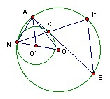

The circle C' is inside the circle C and touches it at N. A tangent at the point X of C' meets C at A and B. M is the midpoint of the arc AB which does not contain N. Show that the circumradius of BMX is independent of the position of X.
Solution

Let C, C' have centers O, O' respectively. An expansion center N takes C' to C. Suppose it takes X to M'. Then OM' is parallel to O'X and hence perpendicular to AB, so M' = M.
Let the radii of C, C' be R, R' respectively. Let the circumradius of BMX be r. Then MX = 2r sin B, but MA = 2R sin B, so r/R = MX/MA. Triangles XMB, XAN are similar, so MX/MA = MX/MB = AX/AN.
Put ∠AON = k. Then AN2 = 2R2(1 - cos k) and AX2 = O'A2 - O'X2 = R2 + (R-R')2 - 2(R-R') cos k = 2R(R-R')(1 - cos k). Hence (AX/AN)2 = (R-R')/R. So r2 = R(R-R'), which is independent of k.
Thanks to Bekjan Jumabaev

© John Scholes
jscholes@kalva.demon.co.uk
31 December 2003
Last corrected/updated 31 Dec 03